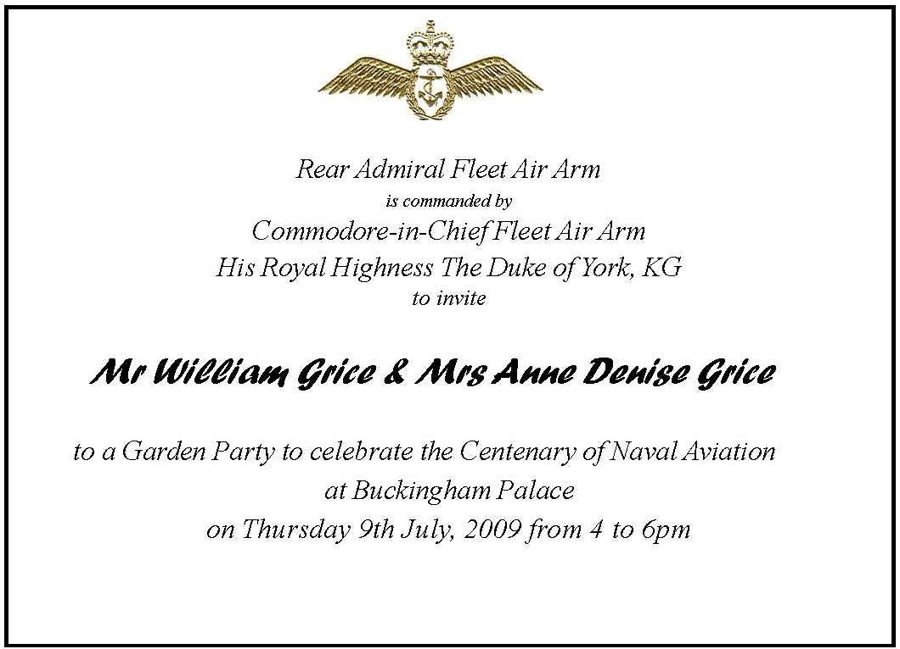

The Royal Garden Party at Buckingham Palace on the 9th July 2009 held by gracious permission of Her Majesty the Queen, is a highlight of the Centenary Year and a privileged opportunity for current and former serving members of the Royal Naval Air Service and Fleet Air Arm and their guests to celebrate our glorious Naval aviation heritage with Members of the Royal Family, fellow aviators, veterans and friends

A century ago, in 1909, the Admiralty ordered its first aircraft, His Majesty's Air Ship 1. It was to prove a far-sighted and visionary decision. Within a relatively few years, air power from the sea would transform naval warfare as radically as had the gun and the steam engine.
The first four Naval pilots completed flying training in 1911 and soon began
putting their new found skills to use in the Fleet. The first take off from a
ship underway was carried out by Lt Cdr Samson RN in May 1912. The early Naval
aviators were spirited and courageous pioneers, leading the way in many aspects
of aerial warfare, including strategic bombing, anti-submarine warfare, airborne
early warning and the development of the first aircraft carrier. HMS Argus. In
the early days there were so many crashes that there was great rivalry among the
young pilots to see just how nonchalantly they could step out of the wreckage.
Flying in open cockpits was also so cold that they often had to be prized out of
their machines on landing and given a bottle of brandy to thaw out.
The fledgling Naval Air Ann was officially recognised with the formation of the
Royal Naval Air Service in 1914. This was the beginning, of Naval aviation in
its own right, represented today by the Fleet Air Arm. By the end of the first
World War, the RNAS had played a major role in the Dardanelles Campaign,
conducted the first ever attacks against warships using seaplanes embarked in
HMS Ark Royal and taken the fight against the Zeppelins to Germany.
It was the iconic action of 20 Swordfish against the Italian Fleet at Taranto in November 1940, however, that inspired the nation and proved the supreme justification for the Fleet Air Ann - for it was the first time in history that an enemy fleet had been defeated without ever sighting or engaging the opposing ships. Two years later in 1942, 18 young Naval aviators in six Swordfish armed with torpedoes attacked the might of the German battle fleet in the English Channel. They faced insurmountable odds. Crippled and ablaze before they got into range, they flew on and delivered their attacks. All six were shot down, but their indomitable spirit, grit and determination lives on in the ethos, camaraderie and can do attitude of the Fleet Air Arm today.
In 1941 Swordfish from HMS Ark Royal crippled the Bismarck and in April 1944, the Fleet Air Arm carried out a strike against the German Battleship Tirpitz which led to the go ahead for the Normandy D-Day Landings. At its height in 1945, the Fleet Air Arm comprised some 78,000 people, 3700 aircraft, 59 aircraft carriers and 56 Naval Air Stations around the world. In the same year the world's first deck landing by jet was made by a pilot of the Fleet Air Arm and in the early 1950s, during the Korean War, Naval aircraft from HMS Triumph, Theseus, Glory and Ocean flew many thousands of sorties.
Over the next 30 years the pace of development in carrier aviation was rapid. With the introduction of the high speed strike aircraft of the 60s and 70s, the Scimitar, Sea Vixen, Phantom, Buccaneer and Sea Harrier, came innovative new technologies - the steam catapult, the angled flight deck, the mirror landing site and the ski-jump. The Cold War was probably the most dangerous peacetime flying ever. It was a time of sublime skill and during this period many fine aviators lost their lives.
The development of Navy helicopters was just as rapid. The first landing of a helicopter on a warship was made in 1946. Since then Navy helicopters have proved indispensible, winning battle honours in Malaya, Borneo, Suez, Aden, the Falklands, the Gulf and more recently Iraq and Afghanistan.
In 1982 Naval Sea Harriers and helicopters played a major role in the Falklands conflict achieving air supremacy over the numerically superior Argentine invaders and in the mid 90s, Sea Harriers operating from HMS Invincible took part in the decisive air strikes which ended the Serb occupation of Kosovo.
In recent years the Fleet Air Arm has been heavily committed in Iraq and Afghanistan and today our Naval Air Squadrons arc in greater demand than they have ever been. In a time of ever greater 'jointery' Naval aircraft and personnel are also assigned to the Joint Helicopter Force and Joint Force Harrier emphasising the continued versatility of Naval aviation and its intrinsically expeditionary nature. At its heart, however, the Fleet Air Arm strongly maintains its core expertise in operating at sea and with the new Queen Elizabeth class carriers and the F-35 Joint Combat Aircraft entering service in the years ahead, Naval aviation looks forward to an exciting future.